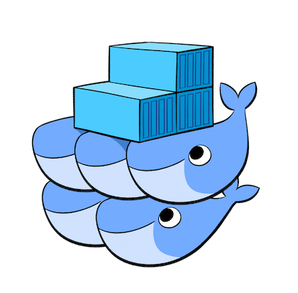

Image source: Docker Inc.
How Do I
Even Swarm?
Use the ◀︎ ▶︎ keys to navigate
| Everett Toews | @everett_toews |
Goals
- Get started with Docker Swarm
- Use Swarm effectively
Agenda
Swarm
Comparison
 |
 |
| VMs | Containers |
Benefits
- Better resource utilization
- Application packaging (Docker images)
- Process isolation
- Immutable infrastructure
- Multi-Cloud
- 🐶🐱🐹 vs 🐮🐮🐮
- Composable
- Reproducible environments
Docker Swarm
Carina
Push Button, Receive Swarm

Carina

Carina Constraints
- Cannot do volume mounts
- Except for
--volume /var/run/docker.sock:/var/run/docker.sock - Use data volume containers instead
- Cannot use
--privileged,--cap-add, or--cap-drop - AppArmor restrictions
Think above the whale
Getting started
on Carina
Tutorial
Images
Foo
Bar
Data
Start by helping yourself
Repeat after me 3 times
The cloud will eat my homework
Backup backup backup
Networks
Foo
Bar
Create
$ docker network create mynetwork
Blah blah blah